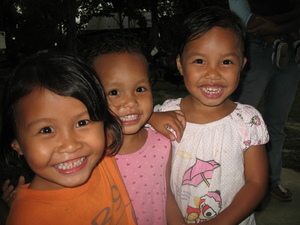

hari 
/hadi/
n.
“younger_sibling”
n.
younger sibling or cousin
Wrd.Gloss: younger_sibling
cf. kakey
Eng. younger sibling; cousin; brother; sister; sibling
Tag. bunsô
Ceb. manghud
OCM: Age stratification (561), Kin Relationships (602)
Online dict status: -
Usage level: B
v.
for a mother (eggariyen, inggari/miggari/piggari, agent, eg><en-) to be pregnant again
Eggariyen e si dudung su tatelu man-e ne leg-un sikandin.
The mother of Dodong was concieved for the second baby, because Dodong was three years old now.
Eng. pregnant
DDP: Pregnancy (2.6.3.1)
Online dict status: -
Usage level: B
pron.
(mengari, mA1-) term of address for someone in the relationship of hari
Cult. Younger sister or younger brother
Eng. address
Online dict status: -
Usage level: B
n.
(talaari, tala:ri, tala-) (for two persons to be in a) sibling relationship
Mabasuk ne talaari ensi Immi wey si Liluy su dakel ka pinamula ran.
The two brothers, Immi and Liluy are industrious for they have a wide plantation
Eng. sibling relationship; brothers; sisters
Tag. kapatíd
Ceb. igsoon
Ilo.: kábsat
OCM: Kin Relationships (602)
Online dict status: -
Usage level: M
Updated by: RJH,TME,QDL
Last updated: 14/Dec/2009
"hari" in text "Dreaming of being Rich"
"hari" in text "Datu Gawilan Rebels against the Government"
"hari" in text "Datu Gawilan Rebels against the Government"
"talaari" in text "Senge lunggunan ne due me anak"
"hari" in healthbook "Mania te keilangan neg lu-luan ta ka me belad ta?"
"hari" in healthbook "Mania teg pakapatey kag iindes?"
"hari" in healthbook "Mania teg pakapatey kag iindes?"
"Hari" in song "Eggale-gale ka langun"
"eghari" in song "Eggale-gale ka langun"
"Hari" in song "Diye te Kalbaryu"
This page last updated: 03-Jan-2020
Copyright © 2009-2014, Matigsalug Language Christian Association, Inc